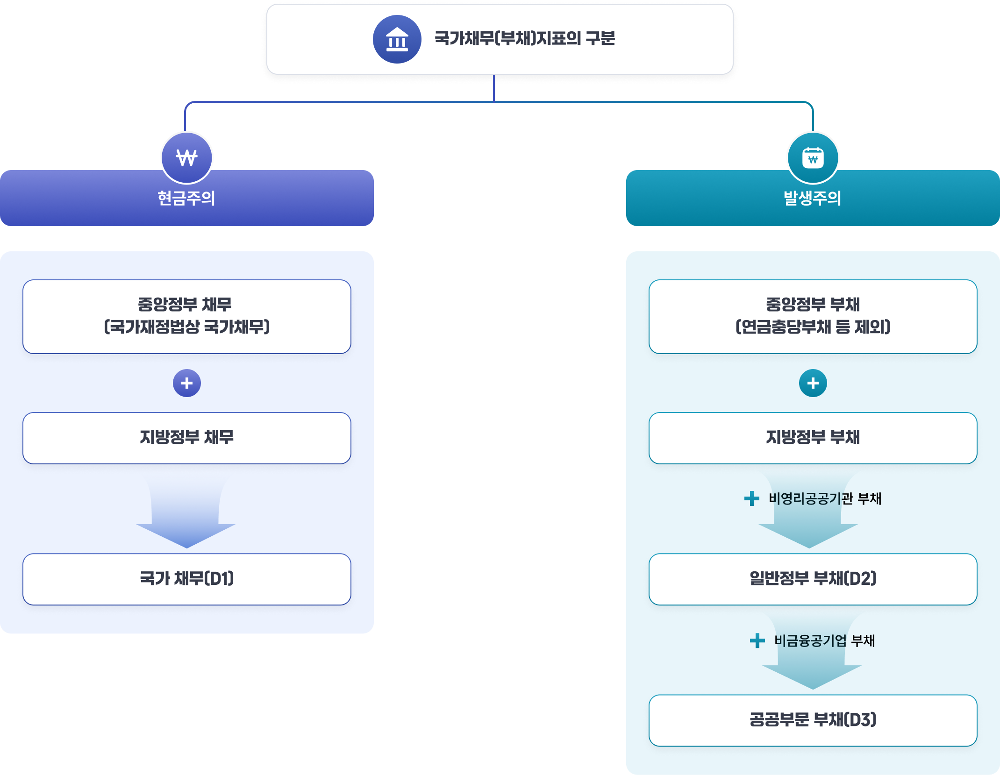

재정수지와 국가채무
1. 국가채무의 의의 및 구성
국가채무는 정부가 미래에 원금과 이자를 갚아야 하는 확정된 빚이라고 이해할 수 있습니다.
즉, 나라가 지금 재정을 운영하면서 민간이나 해외에서 돈을 빌리거나, 나중에 반드시 갚아야 할 의무를 부담하게 된 경우 그 금액이 국가채무로 잡히는 것입니다. 따라서 국가채무는 단순한 적자 규모가 아니라, 국가가 실제로 상환 책임을 지는 빚의 총량을 보여 주는 지표입니다.
법적으로는 ｢국가재정법｣에서 국가채무의 범위를 정하고 있는데, 국가의 회계나 기금이 발행한 채권, 차입금, 국고채무부담행위, 그리고 정부가 대신 지급해야 하는 것이 확정된 국가보증채무가 여기에 포함됩니다. 반대로 중앙관서의 장이 직접 관리하지 않는 일부 회계나 기금의 금전채무, 재정증권이나 한국은행으로부터의 일시차입금, 그리고 정부 내부에서 서로 빌리고 갚는 성격의 채무는 국가채무에서 제외합니다. 이렇게 구분하는 이유는, 실제로 정부가 정부 이외의 주체에 대해 부담하는 빚만 정확히 보려는 것입니다.
국가채무가 중요한 이유는, 이것이 미래 세대의 부담과 직결되기 때문입니다. 지금 빚이 늘어나면 당장은 재정을 더 쉽게 쓸 수 있지만, 나중에는 그 원금과 이자를 갚기 위해 세금이나 추가 재정지출 조정이 필요해집니다. 그래서 국가채무는 단순한 숫자가 아니라, 현재의 재정운용이 미래에 어떤 부담을 남기는지 보여 주는 경고등이라고 할 수 있습니다.
2. 국가채무의 구분
국가채무는 단순히 총액만 보는 것이 아니라, 어디에서 생긴 빚인지와 어떤 성격의 빚인지를 함께 봐야 정확하게 이해할 수 있습니다.
유형별 구분은 국가 전체 재정 구조를 살펴보는 데 도움이 되고, 성질별 구분은 앞으로 이 빚을 갚는 데 어떤 부담이 따를지 판단하는 데 유용합니다.
먼저 유형별 구분은 국가채무가 어느 정부 부문에서 발생했는지를 기준으로 나누는 방식입니다. 국가채무는 크게 1)중앙정부 채무와 2)지방정부 순채무로 구성됩니다.
- 중앙정부 채무는 국가가 직접 부담하는 빚으로, 국채, 차입금, 국고채무부담행위가 여기에 해당합니다. 국채는 국가가 세입 부족을 메우기 위해 발행하는 채권이며, 차입금은 정부가 한국은행이나 민간, 국제기구 등으로부터 직접 빌린 돈입니다. 국고채무부담행위는 예산이 한 해에 모두 반영되기 어려운 장기 사업을 위해, 국회의 의결 범위 안에서 정부가 장래 지급 의무를 부담하는 방식입니다.
- 지방정부 순채무는 지방정부의 지방채와 지방교육채에서 중앙정부에 대한 채무를 뺀 금액으로, ｢국가재정법｣에 따른 국가채무 범위에 속하지는 않지만 국제 비교 등을 위해 국가채무관리계획에 포함하고 있습니다.
다음으로 성질별 구분은 국가채무가 어떤 성격의 빚인지, 그리고 나중에 어떻게 갚아야 하는지를 기준으로 나누는 방식입니다.
국가채무는 1)적자성 채무와 2)금융성 채무로 구분됩니다.
- 적자성 채무는 대응 자산이 없는 채무로, 상환할 때 세금 같은 별도의 재원이 필요합니다. 대표적으로 일반회계의 적자를 보전하기 위해 발생한 채무와, 외환위기 이후 공적자금 상환을 위해 발행한 채무가 여기에 해당합니다.
- 금융성 채무는 그에 대응하는 자산이 있어, 자산을 회수하거나 처분하면 별도의 세금 부담 없이 상환할 수 있는 채무입니다. 외환시장 안정을 위해 발행되는 채무나 서민주거 안정을 위한 국민주택채권 관련 채무가 대표적입니다.
3. 국가채무 관리
재정의 적극적인 역할을 하려면, 국가가 필요할 때 지출을 늘릴 수 있을 만큼 재정 여력을 확보해 두어야 하며, 동시에 그 빚이 지나치게 커져 미래에 감당하지 못하는 일이 없도록 재정 지속가능성도 고려해야 합니다. 이를 위해 정부는 국가채무를 적정한 수준으로 유지하고 상환·조달 과정의 위험을 줄이기 위한 노력을 하고 있습니다.
국가채무 수준관리는 국가채무의 총량이 지나치게 불어나지 않도록 안정적인 수준에서 유지하는 것입니다. ｢국가재정법｣은 정부가 건전재정을 유지하고 국가채무를 적정 수준으로 관리하도록 하며, 이를 위해 매년 국가채무관리계획과 국가채무관리보고서를 제출하도록 하고 있습니다.
이 계획에는 국채·차입금의 상환 실적과 향후 계획, 그리고 앞으로 국가채무가 어떻게 변할지에 대한 전망이 담겨 있어 국회가 예산과 결산 단계에서 채무 흐름을 함께 점검할 수 있습니다.
국가채무 재무위험 관리는 빚의 규모보다도, 빚을 어떤 조건으로 조달하고 상환하느냐에 따른 위험을 줄이는 일입니다.
주요 위험은 두 가지입니다.
하나는 시장위험으로, 금리나 환율이 변해 이자비용과 상환 부담이 커지는 경우입니다.
다른 하나는 차환위험으로, 기존 빚을 갚기 위해 새로 빌려야 하는데 시장 상황이 나빠져 자금 조달이 어려워지는 경우입니다.
그래서 정부는 국채의 금리, 통화, 만기 구조를 적절히 조정해 위험이 한쪽에 몰리지 않도록 관리합니다. 특히 만기가 한꺼번에 몰리지 않게 하고, 발행계획을 미리 세워 안정적으로 조달하는 것이 중요합니다.
4. 국가채무(D1), 일반정부 부채(D2), 공공부문 부채(D3)의 비교
우리나라의 국가채무 통계는 오랫동안 IMF의 ｢정부재정통계편람 1986(GFS 1986)｣을 기준으로 작성되어 왔습니다. 다만, 이 방식은 현금주의로 작성되어서, 이미 상환 시기와 금액이 확정된 빚만 국가채무로 잡는다는 특징이 있습니다. 그래서 실제로 정부가 부담해야 할 재정의 위험을 충분히 반영하지 못하고, OECD의 일반정부 부채 통계처럼 다른 나라와 비교할 때도 범위가 달라 혼란이 생길 수 있었습니다. 특히 중앙정부와 지방정부, 그리고 공공부문의 일부만 담고 있어서, 국가채무를 보기에는 범위가 다소 좁다는 지적이 계속되어 왔습니다.
이 문제를 보완하기 위해 정부는 발생주의·복식부기 국가회계제도를 도입하고, IMF의 ｢GFS 2001｣을 바탕으로 한 일반정부 부채(D2) 통계를 함께 작성하기 시작했습니다.
D2는 기존 국가채무보다 범위가 넓어서, 미지급금·예수금 같은 발생주의 부채와 정부 기능을 수행하는 비영리공공기관의 부채까지 포함합니다.
“당장 현금으로 갚아야 하는 빚”만 보는 것이 아니라, 정부가 실제로 떠안고 있는 재정 부담을 더 넓고 정확하게 보는 방식입니다.
한편, 글로벌 금융위기 이후에는 정부 부채만으로는 공공부문의 위험을 다 보기 어렵다는 점이 커지면서, 국제기구들이 제시한 공공부문 부채(D3) 기준도 함께 활용하게 되었습니다.
D3는 일반정부 부채(D2)에 더해 비금융공기업의 부채까지 포함하므로, 정부와 공기업을 아우르는 더 넓은 범위의 부채를 보여 줍니다.
숫자는 비슷해 보여도 어디까지를 빚으로 볼 것인가에 따라 통계의 의미가 달라지며, 정부는 국가채무(D1), 일반정부 부채(D2), 공공부문 부채(D3) 세 가지 지표를 함께 활용해 재정운용과 위험관리를하고 있습니다.
